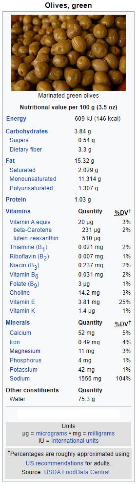

Wiki-Plant
Olive
Cardiovascular Health, Antioxidant
Olive
 Additional InfoCommon name: Olive.
Scientific plant name: Olea europeae L.
Origin: Around 100,000 years ago, olives were used by humans in Africa, on the Atlantic coast of Morocco, for fuel management and, most probably, for consumption.
Harvest season: Fruit harvesting starts from October until February, and leaf harvesting runs from January through March in Mediterranean environments. Usually, the fruit can be hand-picked, but now high-density groves use tractors and mechanics to beat them down from the trees. Usually, leaves and fruits are rinsed with cold water afterward.
Production: The undisputable olive world producer is Spain, with more than 5,000,000 Metric Tons per year. Italy is the second, producing 20% less, followed by Greece with 40% behind. Nevertheless, the quality of Spaniard olive surpasses the rest of the competitors.
Source:
https://www.worldatlas.com/articles/leading-olive-producing-countries.html
Health benefits: Olive constituents, such as oleuropein (OLE), hydroxytyrosol (HT), oleanolic acid (OA), and maslinic acid (MA), contribute to the protection of blood lipids from oxidative stress. Hence, it helps with cardiovascular health and hypertension. In addition, it helps with immunity, antimicrobial, diabetes (OA), and digestive and neuroprotective health (HT and TT).
History of plant usage and discovery: The olive plant was first cultivated some 7,000 years ago in Mediterranean regions. For thousands of years, olives were grown primarily for lamp oil, with little regard for culinary flavor. As far back as 3000 BC, olives were grown commercially in Crete. They contributed to the wealth of the Minoan civilization. Then, the Spaniard colonists brought the olive to the Americas. Currently is widely cultivated in Peru, Chile, and Argentina. Also, some olive orchards in California date from the first half of the 1800s after Spaniard missionaries established the tree in the 18th century. Japan successfully planted its first olive tree in 1908 on Shodo Island, making this place the cradle for olive cultivation in Japan.